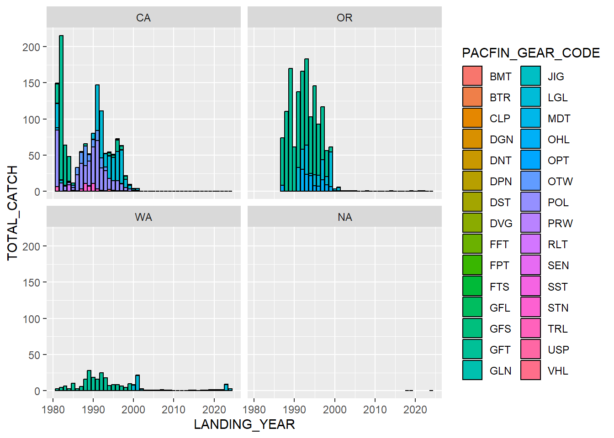
Yelloweye Commercial Catch
Previous Assessment Calcs
- landings from 1981-2016 were obtained from PacFIN (extracted by hear type and state), then combined into the area-specific fishing fleets used in the assessment
- Supplement the year-specific landings from PacFIN with discard amounts estimated by WCGOP = total commercial catch
Previous data sources needed
- PacFIN catches
- WCGOP
CA - from PacFIN OR - reconstructed landings through 1986; recent landings (1987-2017) obtained from PacFIN OR pacfin landings from 1987-1999 were supplemented with add’l estimates from landing`s reported w/in rockfish market categories
Area-specific fishing fleets: California Oregon-Washington
Relevant Notes from GitHub Discussions
- For yelloweye, the bottom and midwater trawls are in the same fleet, don’t worry about that.
Often the gear groupings for TWL and TWS (shrimp trawl) are combined, and then everything else goes into non-trawl. You might check with people analyzing the catch data to make sure that is the case. I have seen shrimp trawl catches put into non-trawl fleets before. Whatever you do should be consistent between the composition data and the landings.
cleanPacFIN() is taking care of these HKL and TWL cases
PacFIN has a lot of different users and three different state agencies that provide data. As a result, there are a LOT of different columns to denote gear. For stock assessment, we most commonly use PACFIN_GROUP_GEAR_CODE. This is only available for the catch data– but you can see which specific PACFIN_GEAR_CODE matches up with the more general PACFIN_GROUP_GEAR_CODE.
use the same data provided in the last assessment then all the years after will be sources from PacFIN – follow up with Fabio (WA) and Ali (OR) to talk about commercial catches (do we also need to ask julia? (CA)) – Is the cv assumed or calculated? Looks like the previous assessment cv’s are just set to 0.01
Load in data
Plotting raw data
Load in data now
Catch Data
- Plot landings by state, gear, and fleet
- Compare current landings with those in the last assessment
- Make sample size tables to determine confidentiality needs
Identify gears in pacfin to figure out trawl and non-trawl fleets
Plots
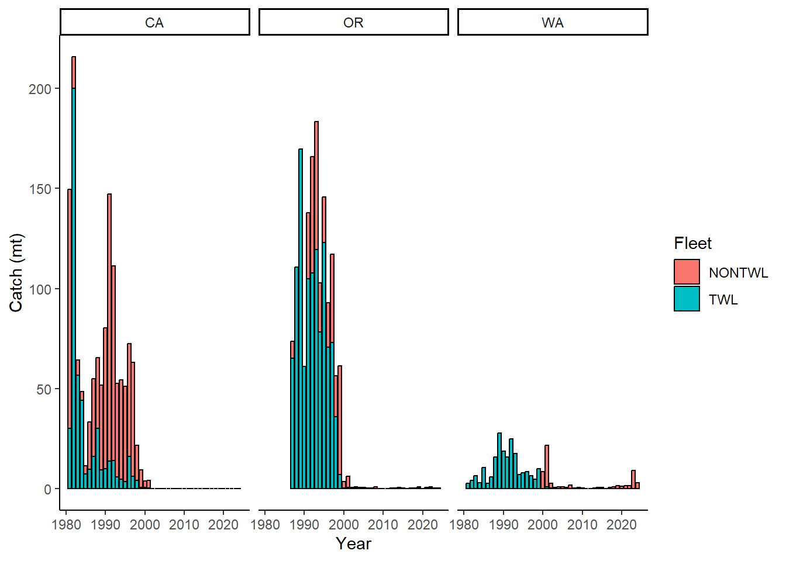
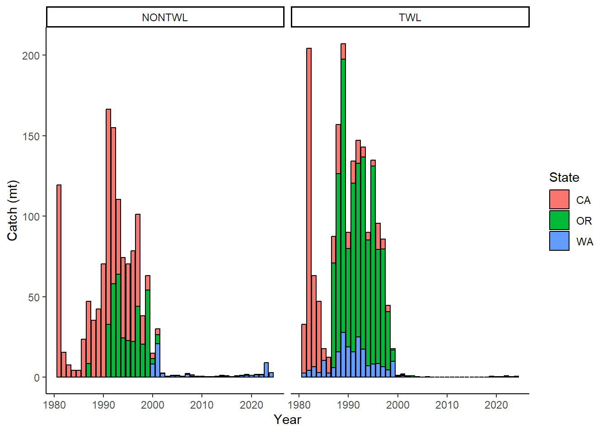
Plots for recent years
Data is same as above, just subset for update years
ggplot(data = subset(catch_state, LANDING_YEAR>2015), aes(x = as.factor(LANDING_YEAR), y = TOTAL_CATCH, fill = FLEET)) +
geom_bar(stat = "identity", position = "stack", color = "black") +
facet_wrap(~ COUNTY_STATE) +
labs(
x="Year",
y="Catch (mt)",
fill="Fleet"
) +
theme_classic()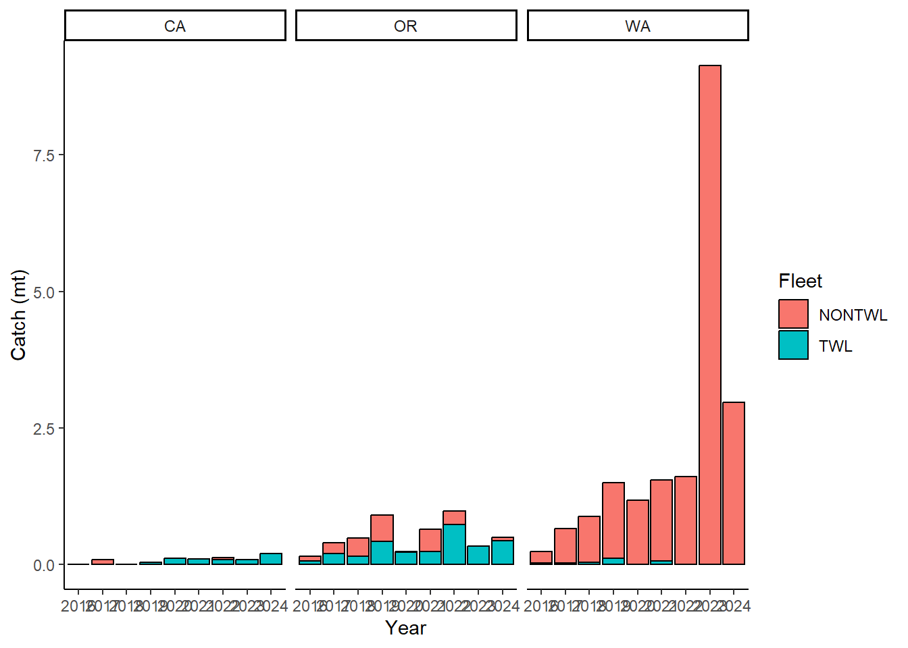
ggplot(data = subset(catch_state, LANDING_YEAR>2015), aes(x = as.factor(LANDING_YEAR), y = TOTAL_CATCH, fill = COUNTY_STATE)) +
geom_bar(stat = "identity", position = "stack", color = "black") +
facet_wrap(~ FLEET) +
labs(
x="Year",
y="Catch (mt)",
fill="State"
) +
theme_classic()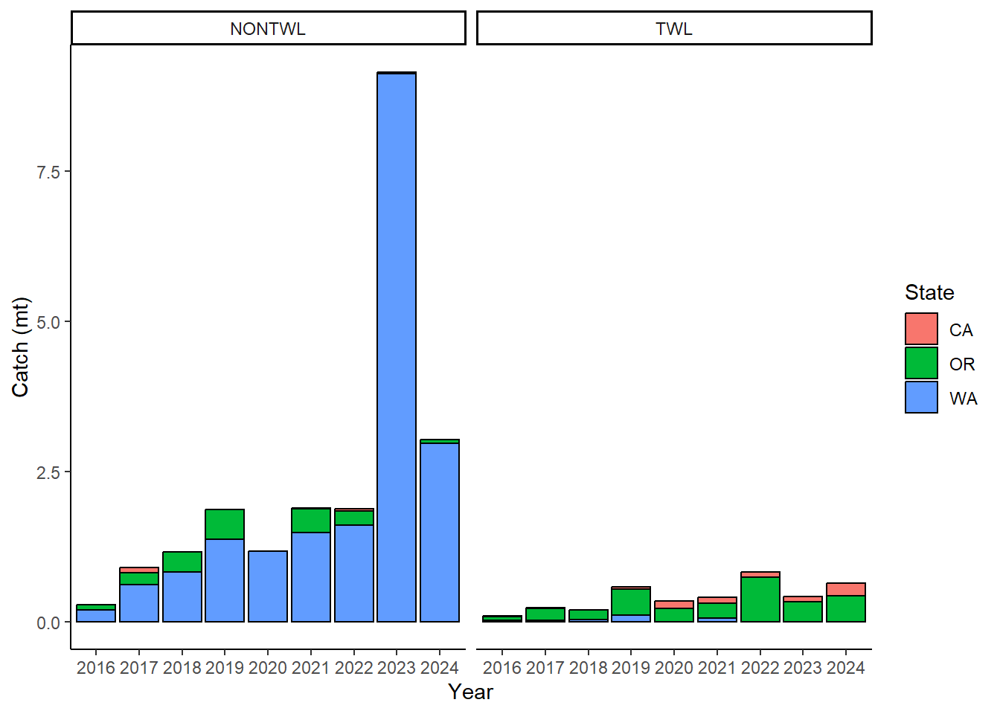
Summarize Catch data by state, year, and gear
This is the summarized data for use in the update assessment
More Plotting
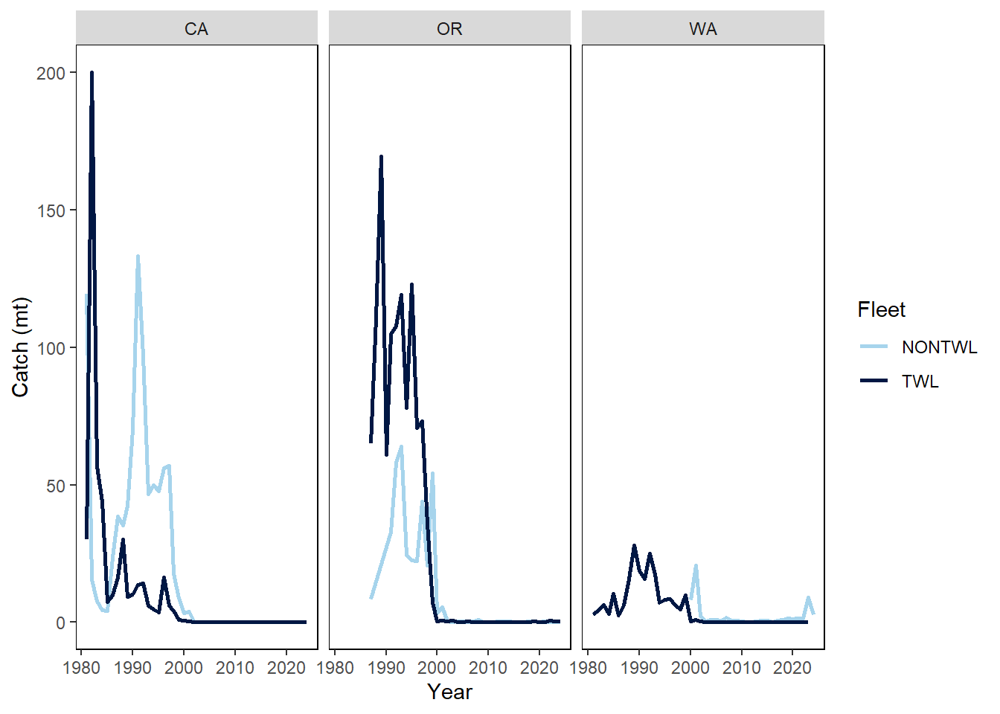
Look at WA Landings in 2023
WA.catch <- catch.pacfin |>
dplyr::filter(LANDING_YEAR == 2023,
COUNTY_STATE == "WA")
max(WA.catch$LANDED_WEIGHT_MTONS)[1] 1.56943chk <- WA.catch |>
dplyr::select(LANDED_WEIGHT_MTONS, LANDING_YEAR, COUNTY_STATE, PACFIN_GEAR_CODE)
CHK2 <- WA.catch[c(57,128),]
WA_catch_gear <- catch.pacfin |>
dplyr::left_join(pacfin_gears, by = c("PACFIN_GEAR_CODE" = "GRID")) |>
dplyr::mutate(FLEET = dplyr::case_when(
GROUP == "TWL" ~ "TWL",
TRUE ~ "NONTWL"
)) |>
dplyr::group_by(LANDING_YEAR, FLEET, PACFIN_GEAR_CODE, COUNTY_STATE) |>
dplyr::summarise(TOTAL_CATCH = sum(LANDED_WEIGHT_MTONS)) |>
dplyr::ungroup() |>
dplyr::filter(!is.na(TOTAL_CATCH),
COUNTY_STATE == "WA")
ggplot(data = WA_catch_gear, aes(x = LANDING_YEAR, y = TOTAL_CATCH, fill = PACFIN_GEAR_CODE)) +
geom_bar(stat = "identity", position = "stack", color = "black") +
labs(
x="Year",
y="Catch (mt)",
fill="Gear"
) +
ggtitle("Washington Yelloweye Commercial Catch")+
theme_light()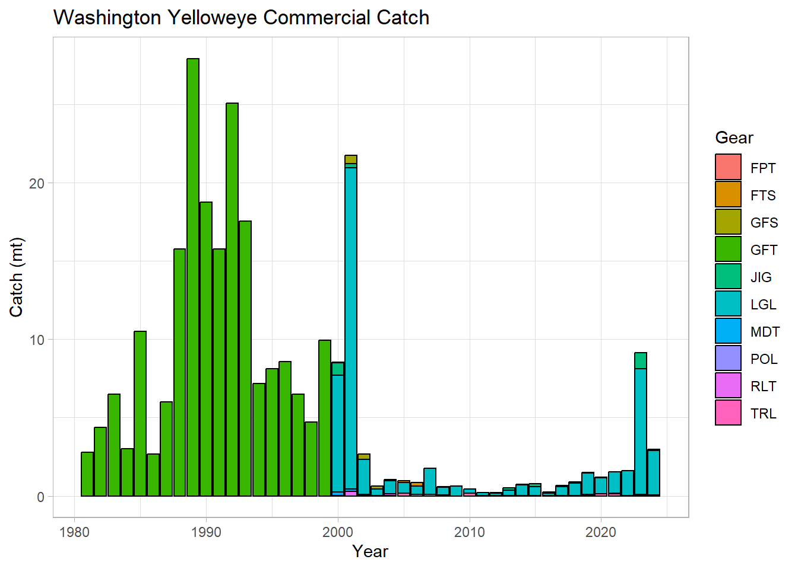
Comparison to OR state data
Pacfin OR from 2016-present vs OR state catch data from 2016-present
# Does not work
# Cath data subset to >2015 (chose 2015 since the 2016 data is missing for CA nontwl)
pacfin.or <- catch |>
dplyr::filter(STATE == "OR") |>
dplyr::mutate(SOURCE = "PACFIN")
or_compar <- or |> dplyr::select(YEAR, FLEET, TOTAL, STATE) |>
dplyr::mutate(SOURCE = "STATE") |>
rbind(pacfin.or) |>
dplyr::filter(YEAR > 2015)
ggplot(data = or_compar, aes(x = as.factor(YEAR), y = TOTAL, fill = SOURCE)) +
geom_bar(stat = "identity", position = "dodge") +
facet_wrap(~ FLEET) +
labs(
x="Year",
y="Catch (mt)",
fill="Source"
)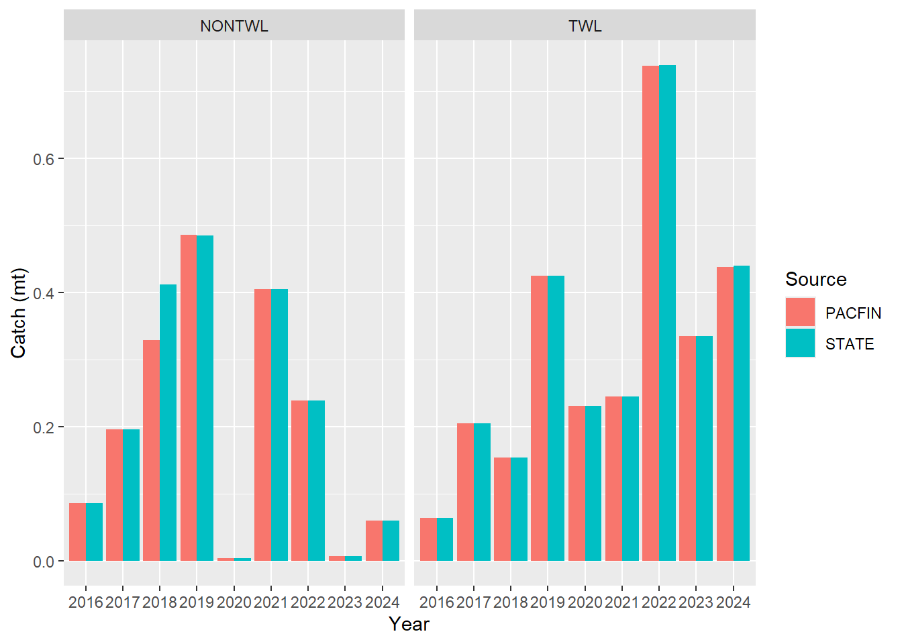
Checking the difference of catches reported by PacFIN vs OR state in 2018 due to discrepancy above
Result of above leads us to use the OR state data to be more convervative even though it’s minimal on the grand scheme of things.
Final Catch
Sample size tables
# A tibble: 9,241 × 3
# Groups: LANDING_YEAR [44]
LANDING_YEAR VESSEL_ID total_count
<int> <int> <int>
1 1981 21217582 1
2 1981 21217603 2
3 1981 21217639 2
4 1981 21217658 2
5 1981 21217733 2
6 1981 21217812 1
7 1981 21217852 1
8 1981 21217872 3
9 1981 21217896 3
10 1981 21217936 1
# ℹ 9,231 more rows# A tibble: 2,546 × 2
VESSEL_ID total_count
<int> <int>
1 21216900 2
2 21216926 2
3 21216939 1
4 21217049 1
5 21217073 2
6 21217108 1
7 21217117 3
8 21217129 3
9 21217145 1
10 21217338 1
# ℹ 2,536 more rows# A tibble: 0 × 2
# ℹ 2 variables: LANDING_YEAR <int>, total_count <int>Vessel count from for summarizing data for catches (2017-present)
Plot OR Data
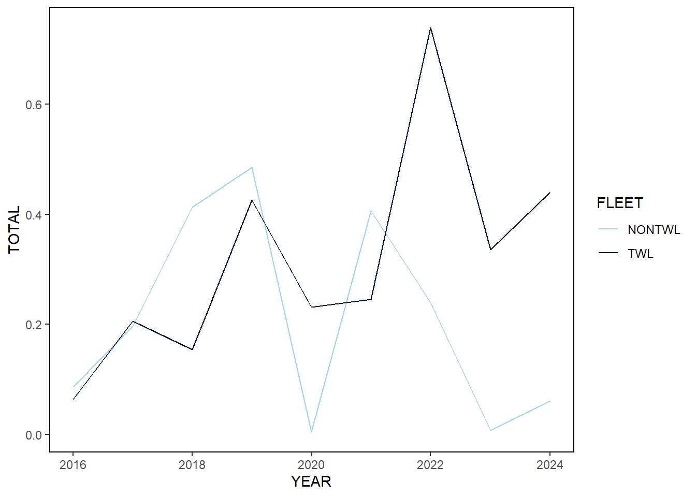
Catches compared to the last assessment
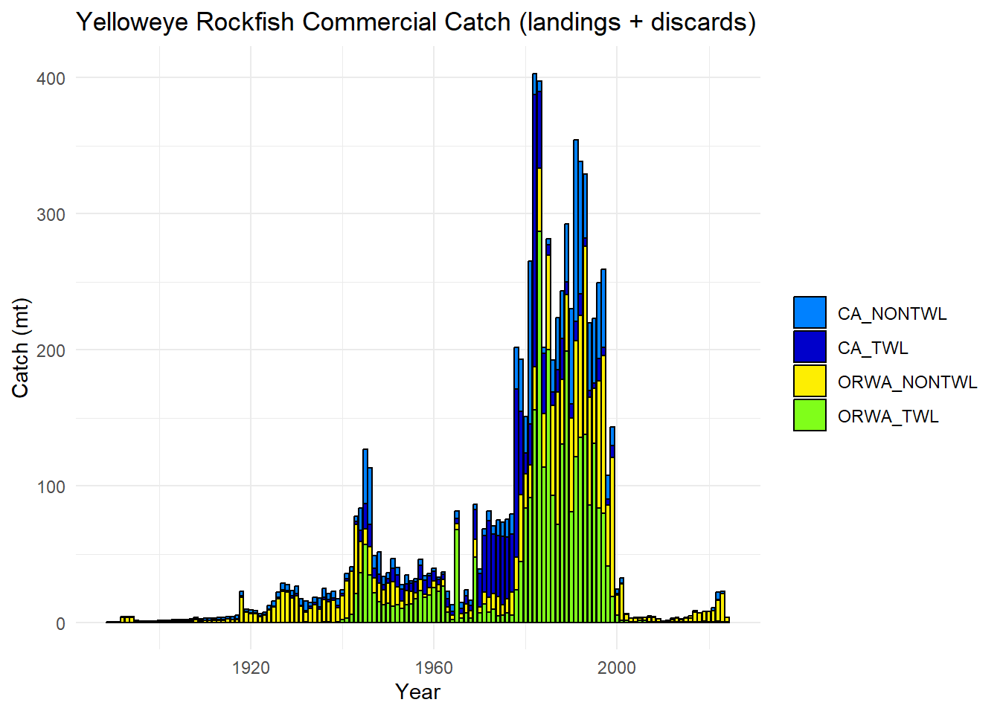
Catches w/o discard data
comm_catch <- catch2 |>
dplyr::filter(STATE == "CA") |>
dplyr::rename(CATCH = TOTAL) |>
rbind(catch_orwa) |>
dplyr::mutate(ST_FLEET = glue::glue("{STATE}_{FLEET}")) |>
dplyr::filter(YEAR > 2016) |>
# dplyr::left_join(discards_all, by = c("YEAR" = "year", "ST_FLEET" = "ST_FLEET")) |>
dplyr::mutate(
# discards = dplyr::case_when(is.na(discards) ~ 0,
# TRUE ~ discards),
TOTAL_CATCH = dplyr::case_when(is.na(CATCH) ~ 0,
TRUE ~ CATCH),
# TOTAL_CATCH = CATCH + discards,
SEAS = "1",
CATCH_SE = 0.01) |>
dplyr::select(YEAR, SEAS, ST_FLEET, TOTAL_CATCH, CATCH_SE)
all_catch_nodisc <- rbind(hist_c, comm_catch) |>
dplyr::mutate(
# YEAR = as.factor(YEAR),
CATCH = as.numeric(TOTAL_CATCH)
)
ggplot(data = all_catch_nodisc, aes(x = YEAR, y = CATCH, fill = ST_FLEET)) +
geom_bar(position = "stack", stat = "identity", color = "black") +
labs(
x = "Year",
y = "Catch (mt)",
fill = ""
) +
ggtitle("Yelloweye Rockfish Commercial Catch (landings only)") +
scale_fill_manual(values = fleetcols) +
theme_minimal()Warning: Removed 1 row containing missing values or values outside the scale range
(`geom_bar()`).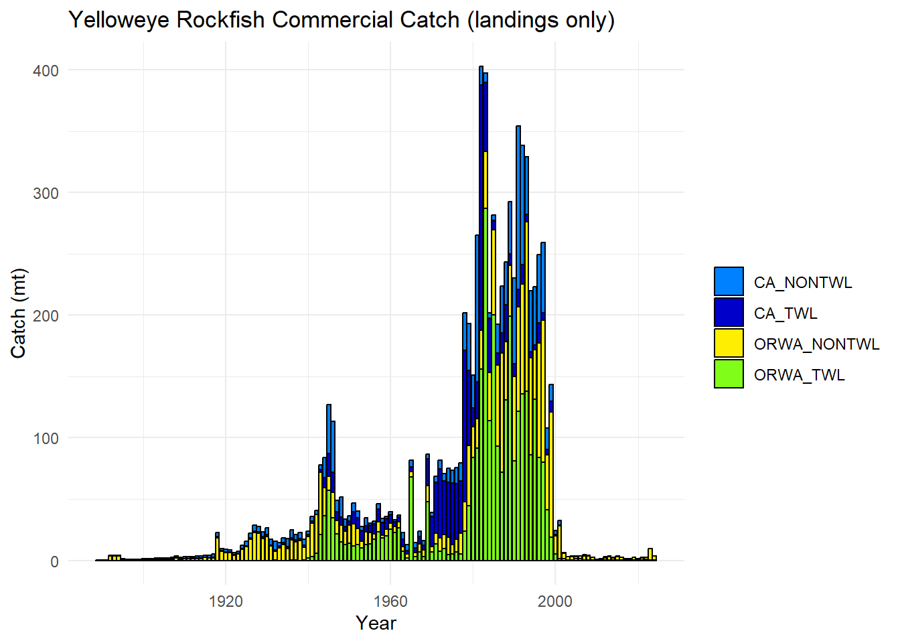
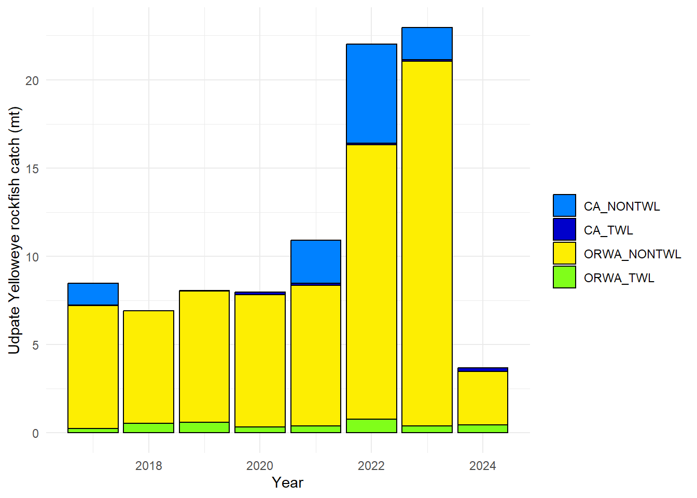
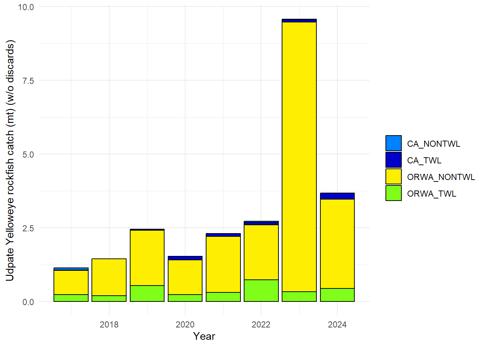
Notes from class
(Regarding commercial discards)
GEMM and WCGOP missing 2004 -> discards missing then and we will have to make some assumptions to add into landings for that year (values should be the same)
use discard rate?
2-area model - GEMM might not have the same breaks in the fleets
PACFIN YOU can specify
WCGOP divided by fleet and won’t have to decide by fleet in GEMM
do comparisons between the 2
look at the sheet for WA recontruction
- Fabio is sending
Double check estimation for update vs assessment
Compare catch from prev assessment to current estimates
# ggplot(data = COMB_CHK) +
# geom_line(aes(x = YEAR, y = as.numeric(TOTAL_CATCH), color = SOURCE), linewidth = 1) +
# facet_wrap(~ ST_FLEET)
ggplot(data = COMB_CHK, aes(x = YEAR, y=TOTAL_CATCH, fill = SOURCE)) +
geom_bar(position = "stack", stat = "identity", color = "black") +
facet_wrap(~ ST_FLEET, scales = "free_y") +
labs(
x="Year",
y="Catch (mt) with discards"
)Warning: Removed 2 rows containing missing values or values outside the scale range
(`geom_bar()`).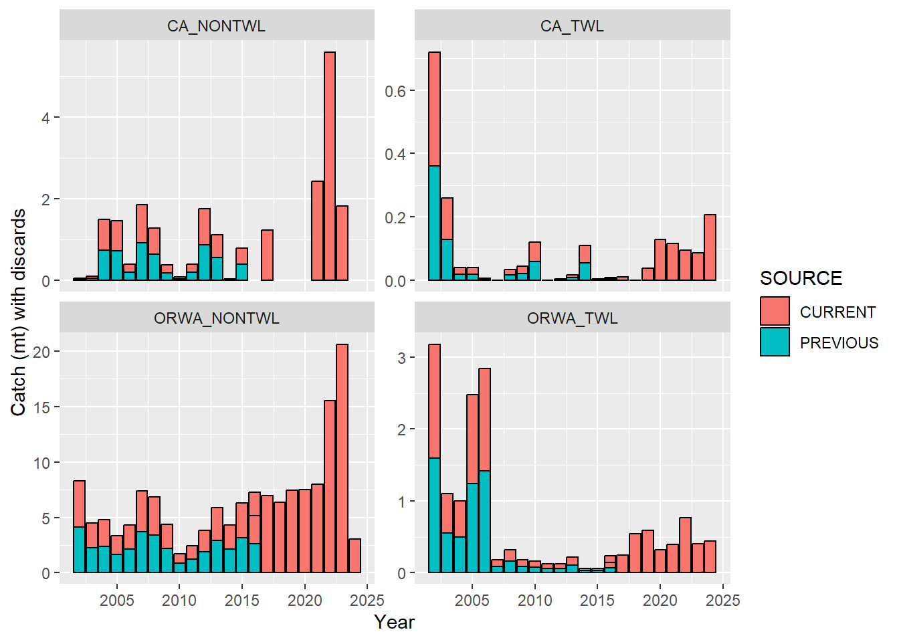
ggplot(data = COMB_CHK, aes(x = YEAR, y=TOTAL_CATCH, color = SOURCE)) +
geom_line(linewidth = 1, position=position_jitter(w=0.02, h=0.02)) +
facet_wrap(~ ST_FLEET, scales = "free_y") +
labs(
x="Year",
y="Catch (mt) with discards"
)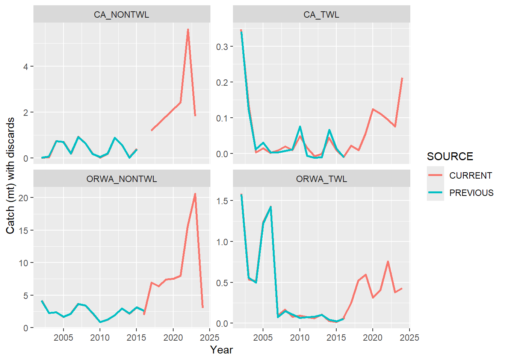
ggplot() +
geom_bar(data = subset(COMB_CHK, SOURCE=="PREVIOUS"), aes(x = YEAR, y=TOTAL_CATCH), stat = "identity")+
geom_line(
data = subset(COMB_CHK, SOURCE=="CURRENT"), aes(x = YEAR, y=TOTAL_CATCH),
linewidth = 1, position=position_jitter(w=0.02, h=0.02), color = "red") +
facet_wrap(~ ST_FLEET, scales = "free_y") +
labs(
x="Year",
y="Catch (mt) with discards"
)Warning: Removed 1 row containing missing values or values outside the scale range
(`geom_bar()`).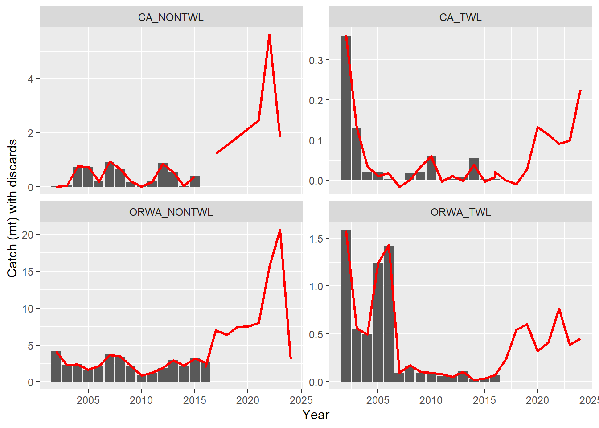
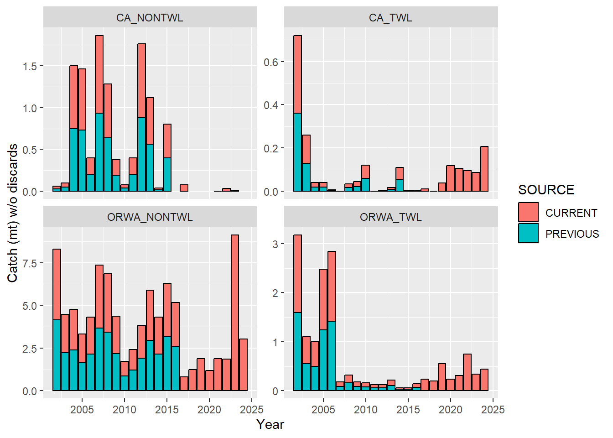
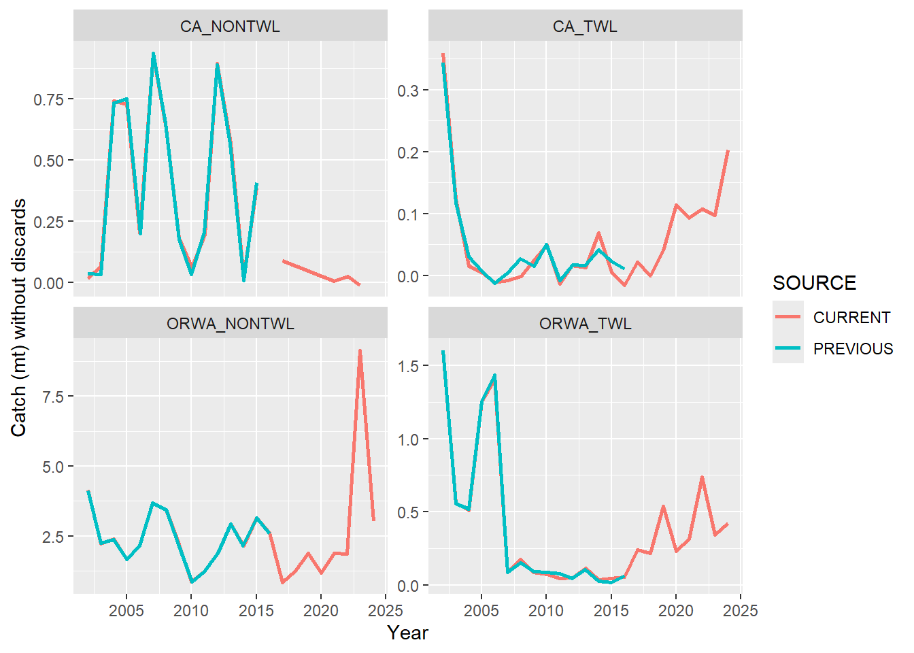
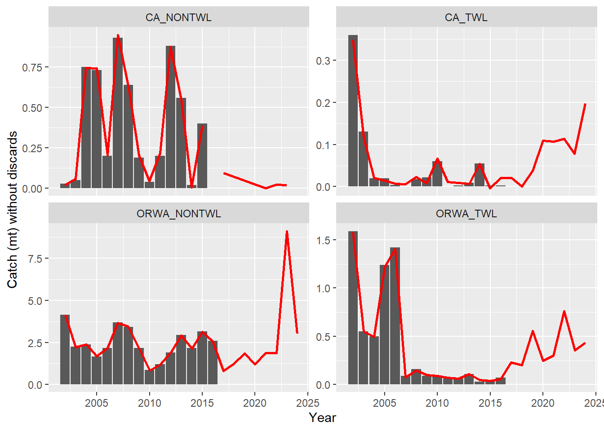